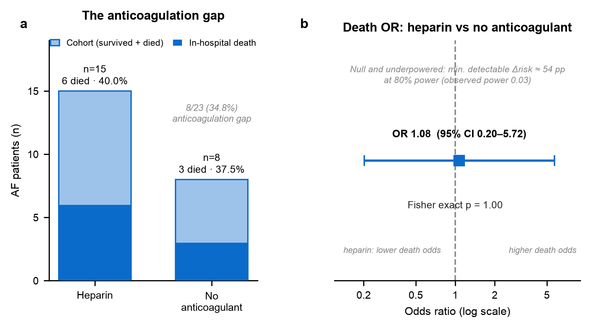
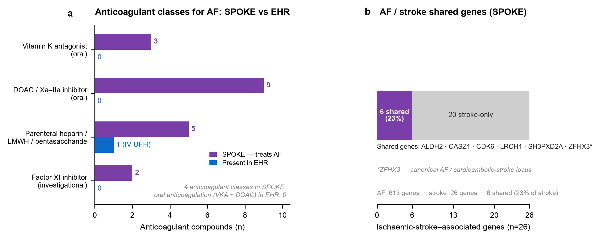

Original observational study on a synthetic dataset · MedCP (EHR) + SPOKE (knowledge graph) · drug-exposure design (STROBE + RECORD + RECORD-PE)
Provenance legend: EHR measured in the clinical records (via MedCP) · SPOKE derived from the biomedical knowledge graph (via MedCP).
Source study. Original study on Synthetic Dataset — there is no antecedent paper; the protocol, cohort, and analysis below were designed de novo for the synthetic MIMIC-IV demo.
Question. Among critically ill patients carrying at least one atrial-fibrillation (AF) rhythm annotation, how many have any documented anticoagulant, and does documented heparin exposure distinguish patients on size, sex, age, heart rate, or in-hospital death?
Cohort EHR. Of 100 patients, 23 carry ≥1 AF annotation (condition_source_value = 'AF (Atrial Fibrillation)'; 2,405 annotation rows — a rhythm-monitor label repeated across telemetry, not 2,405 diagnoses). 15/23 have any heparin exposure; 8/23 (34.8%) have no documented anticoagulant of any kind — the anticoagulation gap.
The only anticoagulant in the entire dataset is heparin. A structured search for warfarin, all four DOACs (apixaban, rivaroxaban, edoxaban, dabigatran), enoxaparin, fondaparinux, argatroban and bivalirudin returned zero records. "No heparin" is therefore identical to "no anticoagulant," and every heparin record is an intravenous product (D5W / saline base, one 25,000-unit premix bag) — parenteral, short-acting, not definitive oral stroke-prevention anticoagulation.
Primary contrast EHR. In-hospital death was 6/15 (40.0%) with heparin vs 3/8 (37.5%) without — risk difference +2.5 pp (95% CI −35.3 to +36.5), odds ratio 1.08 (95% CI 0.20–5.72), Fisher p = 1.00. The heparin group was older (median 78 vs 66 y; Mann–Whitney p = 0.05) with more women (40% vs 12.5%; p = 0.35); median heart rate was near-identical (90 vs 88 bpm; p = 0.92).
Bottom line. The primary contrast is null and profoundly underpowered: with 15 vs 8 patients the minimum detectable difference at 80% power is ~54 percentage points and observed power is 0.03, so this design cannot distinguish no effect from a very large one. The finding is compatible with any effect, never a confirmation of none. The interpretable signal is descriptive: a one-third documentation gap in a population for which SPOKE confirms anticoagulation is a first-line, mechanistically-grounded therapy.
Reporting standard: STROBE + RECORD (routinely-collected OMOP data) + RECORD-PE (drug-exposure study). Source-study fields = "original study on Synthetic Dataset." No field left blank; undeterminable parameters recorded as explicit assumptions.
| Field | Value |
|---|---|
| Citation (source study) | original study on Synthetic Dataset |
| Design of source study | original study on Synthetic Dataset — cross-sectional, drug-exposure descriptive analysis of an ICU cohort |
| Reporting standard applied | STROBE + RECORD + RECORD-PE |
| Setting & calendar timeframe | Synthetic, date-shifted MIMIC-IV demo ICU (single-centre; 100 patients). Event dates shifted to 2111–2201; true calendar time not recoverable (assumption: date shift preserves within-patient intervals and age). |
| Unit of analysis | Person (patient); one row per AF patient |
| Primary endpoint | In-hospital death (presence in OMOP death table) |
| Primary estimand | As-treated, marginal association between any documented heparin exposure and in-hospital death. No causal/ITT claim (assumption: descriptive contrast only). |
| Time zero (index date) | First AF rhythm annotation (earliest condition_start_date for 'AF (Atrial Fibrillation)') |
| Eligibility assessment window | Entire available record (assumption: no fixed enrolment window in demo) |
| Baseline lookback window | Entire record; demographics fixed, heart rate summarised as within-stay median (assumption: no −365d lookback feasible in a single ICU stay) |
| Exposure ascertainment & washout | Any heparin record anywhere in the stay (prevalent exposure); no washout (assumption: demo lacks pre-admission drug history) |
| Follow-up start | Time zero (first AF annotation) |
| Follow-up end / administrative censoring | End of record (hospital discharge or death) |
| Censoring: loss to follow-up | None modelled — single continuous admission |
| Censoring: death | Death is the endpoint, not a censoring event |
| Censoring: treatment switch / discontinuation | Not modelled (prevalent-exposure, cross-sectional design) |
| Competing risks handling | None — binary endpoint (died vs discharged alive); no competing-risk model (assumption: adequate for a descriptive contrast) |
Immortal-time & timeline checks. Exposure is prevalent (ascertained over the whole stay), so this is explicitly not an immortal-time-safe survival design: a patient must survive long enough to be started on heparin, which can bias a naïve exposure–death contrast. Because the reported endpoint is a single binary in-hospital-death flag rather than time-to-event, no follow-up interval is counted as exposed person-time and no outcome precedes time zero; the prevalent-exposure / reverse-causation concern is carried into the Limitations instead.
| Design element | Original paper | This study | Deviation & expected effect |
|---|---|---|---|
| Time zero | original study on Synthetic Dataset | First AF rhythm annotation | — (defined de novo) |
| Eligibility window | original study on Synthetic Dataset | Whole record | Prevalent AF, not incident → case-mix uncertain |
| Exposure & washout | original study on Synthetic Dataset | Any heparin, no washout | Prevalent exposure → reverse-causation / confounding by indication |
| Outcome & code set | original study on Synthetic Dataset | OMOP death table presence | In-hospital only; out-of-hospital deaths unobserved → undercount |
| Follow-up start / end | original study on Synthetic Dataset | Index → discharge/death | No person-time modelled → no rate/HR |
| Censoring rules | original study on Synthetic Dataset | None (single admission) | — |
| Competing risks | original study on Synthetic Dataset | None | Discharge-alive is the complement → acceptable for binary contrast |
| Covariates in adjustment set | original study on Synthetic Dataset | None (unadjusted) | ~9 deaths → multivariate models overfit; confounding uncontrolled |
| Statistical model | original study on Synthetic Dataset | Fisher / χ² · Mann–Whitney | Exact tests suit tiny cells; no modelling |
Every non-empty deviation above is carried into §5 Limitations.
100 patients → 23 with an AF annotation (inclusion) → split by any heparin record into 15 exposed and 8 unexposed. Because heparin is the only anticoagulant present in the whole database, the 8 unexposed patients constitute the full anticoagulation gap.
| Characteristic | Heparin (n=15) | No anticoagulant (n=8) | Test | p | Effect size (95% CI) |
|---|---|---|---|---|---|
| Female, n (%) | 6 (40.0) | 1 (12.5) | Fisher | 0.345 | — (small cells) |
| Male, n (%) | 9 (60.0) | 7 (87.5) | — | — | — |
| Age at first AF, y — median [IQR] | 78 [65–80] | 66 [60–69] | Mann–Whitney | 0.052 | Median diff +11.5 y (95% CI −2 to +20); rank-biserial −0.51 |
| Heart rate, bpm — median [IQR]a | 90 [83–99] | 88 [81–97] | Mann–Whitney | 0.923 | Median diff +2 bpm (95% CI −15 to +15); rank-biserial −0.03 |
| In-hospital death, n (%) | 6 (40.0) | 3 (37.5) | Fisher | 1.000 | OR 1.08 (0.20–5.72); RD +2.5 pp (−35.3 to +36.5) |
a Per-patient median of intra-stay heart rate (MIMIC itemid 220045, bpm; 9,342 physiologic readings, 20–250 bpm, across all 23 patients). 95% CIs for continuous effect sizes are non-parametric bootstrap (10,000 resamples, seed 20260723); proportion-difference CI by the Newcombe method; odds-ratio CI by Woolf with Haldane–Anscombe 0.5 correction.
| Metric | Original Paper Result | This study | Notes |
|---|---|---|---|
| Events / N — heparin | original study on Synthetic Dataset | 6 / 15 (40.0%; 95% CI 19.8–64.3) | Wilson CI |
| Events / N — no anticoagulant | original study on Synthetic Dataset | 3 / 8 (37.5%; 95% CI 13.7–69.4) | Wilson CI |
| Risk difference | original study on Synthetic Dataset | +2.5 pp (95% CI −35.3 to +36.5) | Newcombe |
| Odds ratio | original study on Synthetic Dataset | 1.08 (95% CI 0.20–5.72) | Fisher p = 1.000 |
| Min. detectable effect @ 80% power | original study on Synthetic Dataset | ~53.9 pp absolute risk difference | Two-proportion, n=15 vs 8, α=0.05; observed power 0.03 |
| Overall AF mortality | original study on Synthetic Dataset | 9 / 23 (39.1%) | Context |
The two mortality estimates are essentially identical (40.0% vs 37.5%) and their confidence intervals overlap almost completely. Per the framework's single-centre power guidance, a confidence interval spanning −35 to +37 percentage points is uninformative: it is compatible with a large protective effect, no effect, or a large harmful effect. Only an effect of ~54 percentage points would be reliably detectable here — so no inference beyond feasibility is drawn. Multivariable adjustment was deliberately not attempted (9 total deaths would overfit any model with more than ~1 covariate).


TREATS atrial fibrillation — oral vitamin-K antagonists (3 compounds), oral direct anticoagulants / factor-Xa–IIa inhibitors (9), parenteral heparins / LMWH / pentasaccharide (5) and investigational factor-XI inhibitors (2); the EHR contains only intravenous unfractionated heparin, so every oral-anticoagulant class — the guideline mainstay for AF stroke prevention — is absent.
(b) Atrial fibrillation (613 genes) and ischaemic stroke (26 genes) share 6 genes — ALDH2, CASZ1, CDK6, LRCH1, SH3PXD2A, ZFHX3 (23% of all stroke-associated genes); ZFHX3 is the canonical AF / cardioembolic-stroke locus. This shared genetic architecture is the mechanistic thromboembolic rationale for anticoagulating AF patients.The EHR can count anticoagulant records but cannot say whether anticoagulation is indicated, why it matters, or what the missing drugs are. SPOKE (via MedCP) supplies exactly that biomedical context, kept separate from the EHR below.
TREATS atrial fibrillation (DOID:0060224). Among them are ≥18 anticoagulants across four classes: oral vitamin-K antagonists (warfarin, acenocoumarol, tecarfarin), the oral direct anticoagulants / factor-Xa–IIa inhibitors (apixaban, rivaroxaban, edoxaban, dabigatran, betrixaban, darexaban, ximelagatran, atecegatran), parenteral heparins / LMWH / pentasaccharide (heparin, enoxaparin, certoparin, heparin pentasaccharide), and investigational factor-XI inhibitors (abelacimab, milvexian). The EHR contains only intravenous heparin — so SPOKE reveals that the entire oral-anticoagulant armamentarium that defines guideline AF stroke prophylaxis is absent from these records, deepening the documented gap beyond what the EHR alone shows.TREATS both AF and stroke returned empty: SPOKE models anticoagulants as AF treatments and stroke as a downstream consequence linked through shared genes, rather than as a single drug–disease edge to both. The rationale is therefore mechanistic (shared genes), not a direct dual-indication edge.Net contribution: SPOKE converts a bare EHR count ("8 patients without heparin") into an interpretable clinical statement — those patients lack a therapy that is (i) mechanistically indicated because AF and stroke share genetic architecture, and (ii) available in forms (oral VKA / DOAC) that never appear in the record at all.
condition_source_value = 'AF (Atrial Fibrillation)' is not a formal, adjudicated AF diagnosis and may over- or under-capture true AF.death table records in-hospital death; post-discharge deaths are unobserved, so mortality is a floor.All data retrieved through MedCP (clinical SQL → SQLite OMOP; SPOKE Cypher → Neo4j). Extractions saved to study-B/data/*.csv and study-B/kg/*.json; statistics in study-B/analysis.py (loads only those files); full query set in study-B/queries.log. Key queries below.
# --- Clinical (MedCP query_clinical_records) ---
# Sanity: persons=100, AF annotations=2405, AF patients=23
SELECT (SELECT COUNT(*) FROM person) persons,
(SELECT COUNT(*) FROM condition_occurrence WHERE condition_source_value='AF (Atrial Fibrillation)') af_annotations,
(SELECT COUNT(DISTINCT person_id) FROM condition_occurrence WHERE condition_source_value='AF (Atrial Fibrillation)') af_patients;
# Confirm heparin is the ONLY anticoagulant (this returned ZERO rows):
SELECT DISTINCT drug_source_value FROM drug_exposure
WHERE LOWER(drug_source_value) LIKE '%warfarin%' OR LIKE '%apixaban%' OR LIKE '%rivaroxaban%'
OR LIKE '%dabigatran%' OR LIKE '%edoxaban%' OR LIKE '%enoxaparin%' OR LIKE '%fondaparinux%'
OR LIKE '%argatroban%' OR LIKE '%bivalirudin%' OR LIKE '%coumadin%'; -- (OR-chain elided)
# Cohort -> data/af_cohort.csv (one row per AF patient)
SELECT p.person_id, p.gender_source_value AS sex, p.year_of_birth, af.first_af_date,
(CAST(strftime('%Y', af.first_af_date) AS INTEGER) - p.year_of_birth) AS age_at_af,
CASE WHEN hep.person_id IS NOT NULL THEN 1 ELSE 0 END AS heparin,
CASE WHEN d.person_id IS NOT NULL THEN 1 ELSE 0 END AS died
FROM (SELECT person_id, MIN(condition_start_date) first_af_date FROM condition_occurrence
WHERE condition_source_value='AF (Atrial Fibrillation)' GROUP BY person_id) af
JOIN person p ON p.person_id=af.person_id
LEFT JOIN (SELECT DISTINCT person_id FROM drug_exposure WHERE LOWER(drug_source_value) LIKE '%heparin%') hep ON hep.person_id=af.person_id
LEFT JOIN (SELECT DISTINCT person_id FROM death) d ON d.person_id=af.person_id;
# Heart rate -> data/af_heart_rate.csv (MIMIC itemid 220045, bpm)
SELECT m.person_id, m.value_as_number FROM measurement m
JOIN (SELECT DISTINCT person_id FROM condition_occurrence WHERE condition_source_value='AF (Atrial Fibrillation)') af ON af.person_id=m.person_id
WHERE m.measurement_source_value='220045' AND m.value_as_number BETWEEN 20 AND 250;
# --- SPOKE (MedCP query_knowledge_graph) ; AF=DOID:0060224, stroke=DOID:0051061 ---
MATCH (c:Compound)-[:TREATS_CtD]->(:Disease {identifier:'DOID:0060224'})
WHERE NOT coalesce(c.vestige,false) RETURN c.name ORDER BY c.name; # -> kg/af_treatments.json (135)
MATCH (:Disease {identifier:'DOID:0060224'})-[:ASSOCIATES_DaG]->(g:Gene)<-[:ASSOCIATES_DaG]-(:Disease {identifier:'DOID:0051061'})
RETURN g.name, g.identifier ORDER BY g.name; # -> kg/af_stroke_shared_genes.json (6)
MATCH (:Disease {identifier:'DOID:0060224'})-[:ASSOCIATES_DaG]->(g:Gene) WITH count(DISTINCT g) af_genes
MATCH (:Disease {identifier:'DOID:0051061'})-[:ASSOCIATES_DaG]->(g2:Gene) RETURN af_genes, count(DISTINCT g2) stroke_genes; # 613 / 26
The exact prompt that produced this study: